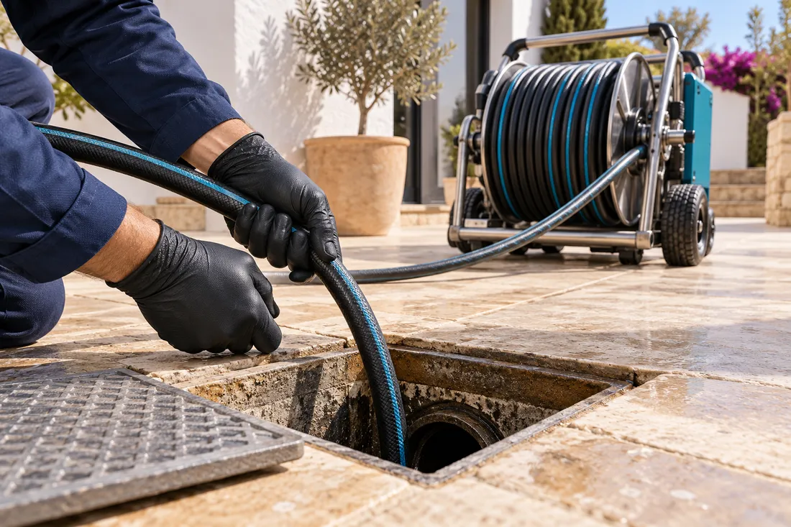

Desatascos 24 horas
Para esos momentos en los que el agua deja de fluir. Viviendas, comunidades y negocios, de día o de noche.
Conocer el servicio →Desatascos e inspección de tuberías con cámara en Alicante y alrededores. Cuéntanos qué ocurre. Te ayudamos a dar el siguiente paso.
Canales de contacto pendientes de activación.

Llama o escribe por WhatsApp. Indica tu localidad y qué desagüe está afectado.
Consulta disponibilidad, desplazamiento y presupuesto antes de autorizar el trabajo.
Se valora el atasco o la inspección y se explican los resultados y los siguientes pasos.
De la Marina Baixa a la Vega Baja.
Consulta la atención disponible en tu localidad.